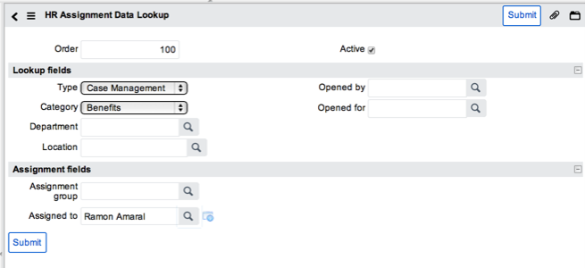

Administering HR Service Management
Contents
1 Overview
HR managers can:
- View the dashboard to review HR team progress.
- Run HR reports to track the progress of HR cases.
- Define assignment rules to automatically assign cases.
- Define organization positions to describe employee job roles.
2 Viewing the Dashboard
The human resources dashboard is a homepage that contains gauges and reports showing HR case information for:
- Active HR cases by category.
- Active HR cases by assignment.
- Active HR case breakdown.
- HR Cases Opened in the Last 6 Months by Category.
Navigate to Human Resources > Overview to view the dashboard.
{kind=link}
See Available Reports for details of these reports.
3 Running HR Reports
Administrators and users with the hr_manager role can run reports to view the current status of HR cases, track them, and intervene where required, to improve overall efficiency and effectiveness. For example, you can view HR cases in the Employee Relations category that have been created in the past month.
To run a report, navigate to Human Resources > Reports.
{kind=link}
Select the report entry to run the report.
3.1 Available Reports
These reports are available by default:
| Report name | Description | Displays |
|---|---|---|
| Active HR Case Breakdown | Count of the different types of cases raised and the users who raised them. | Assigned to, HR Case type |
| Active HR Cases | Tabular view of all active cases. | Number, Type, Category, State, Short description, Opened by, Assignment group, Assigned to |
| Active HR Cases by Assignment | Bar chart showing the number of cases assigned to each HR user. | Assigned to, Count |
| Active HR Cases by Category | Pie chart where each slice represents an HR case category. | Category, Count |
| HR Cases Opened in the Last 6 Months by Category | Trend chart where each bar represents an HR case category in which cases were raised over the last 6 months. | Category, Count |
| HR Cases Opened Last Month by Category | Bar chart of cases raised over the last month by HR case category. | Category, Count, Month |
| HR Cases Opened This Month by Category | Bar chart of cases raised over the current month by HR case category. | Category, Count |
| Unassigned HR Cases | List of HR cases not assigned to any user. | Number, Type, Category, State, Short description, Opened by, Assignment group, Assigned to |
| Active HR Tasks | List of active HR tasks. | Number, State, Short description, Opened by, Assignment group, Assigned to |
| Active HR Tasks - Assigned To Me | List of HR tasks assigned to the current user. | Number, Case, Short description, State, Assignment group, Assigned to |
If you are using HR employee change, you also see the following reports:
| Report name | Description | Displays |
|---|---|---|
| Onboarding calendar | Calendar report showing all active onboarding requests in a calendar view, sorted by employee change date. | Number, Category, State, Short description, Opened by, Opened for, Assignment group, Assigned to |
| Onboarding cases starting next week less than 100% complete | Outstanding onboarding cases requiring attention, based on HR changes with change dates in the upcoming week. | Number, Category, State, Short description, Opened by, Opened for, Assignment group, Assigned to |
4 Using Assignment Rules
HR managers, users with the hris_admin role, can define data lookup rules to automatically assign cases to specific users or groups based on the rule conditions. This allows new or modified HR cases to be quickly assigned for processing.
HR managers can define assignment rules to assign cases to groups and turn on auto-assignment to create a group-based assignment engine. The assignment rules set the correct group, and then auto-assignment picks the best person in the group. This results in some load balancing being done. Using assignment rules alone works best when only one person performs the particular type of case or task. Using auto-assignment alone is better when a group of people can perform the particular type of case or task.
For example, an assignment rule could specify that all cases raised by a user in Germany should be automatically assigned to the German HR representative. The German representative can then view this information by navigating to Human Resources > Service Management > Assigned to me.
Assignment lookup rules contain:
- Lookup fields: matcher information, defining one or more conditions to match against.
- Assignment fields: setter information, defining the user or group to assign the case to, if a valid matcher condition is met.
| |
Note: If you choose not to use the data lookup or assignment rules described in this section, you can use auto-assignment for tasks, requests, or both. To do so, you must use the assignment group specified in the template. |
4.1 Creating an Assignment Rule
To define an assignment lookup rule for human resources:
- Navigate to Human Resources > Administration > Assignment Lookup Rules.
- Click New.
- Fill in the fields (see table).
- This example rule defines that all cases with a category of Benefits are to be assigned to Ramon Amaral.
- 
- Click Submit.
{kind=link}
| Field | Description |
|---|---|
| Order | Determines the priority order of this rule. The rules run from lowest to highest order, and the first rule that matches the lookup fields determines the case assignment values. |
| Active | Defines whether the rule is active. |
| Lookup fields | |
| Type | Matches the type of record to evaluate. For the Dublin release, select Service Management. |
| Category | Matches the case category. |
| Opened by | Matches the user who opened the case. |
| Opened for | Matches the user the case was opened for. |
| Department | Matches the department of the case. |
| Location | Matches the location of the case, |
| Assignment fields | |
| Assignment group | Assigns cases that match the lookup fields to this group.
Note: Assignment groups are restricted to those groups with a type of human_resources. You may need to configure the Group form to add the Type field. |
| Assigned to | Assigns cases that match the lookup fields to this user. |
4.2 Testing Assignment Rules
To verify that an assignment rule works as intended:
- Create a new HR case.
- Populate the form with data matching the matcher conditions.
- Save the HR case.
- Reopen the case and check that the correct assignment information has been added.
5 Defining Organization Positions
As part of the setup process for HR Service Management, HR managers should define organization positions to describe employee job roles within the organization.
| |
Note: Other organization information such as location or department information is available in your current system. To use the HR Service Management application, you must create position records for your organization. |
- Navigate to Human Resources > Organizations > Positions to see a list of defined positions.
- Click New to create a position, or click an entry to view or edit details for that position.
- Fill in the fields as appropriate.
- Click Submit.
{kind=link}